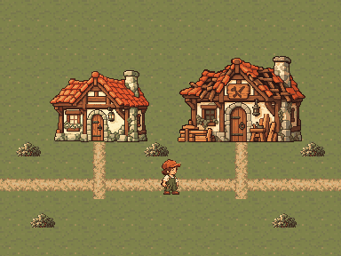
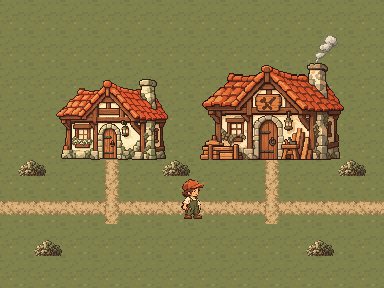
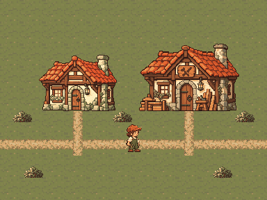
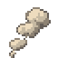

Workshop 완성 연출 · 색과 효과
사용자 색·효과 방향 승인 완료 · 아트 지침의 다섯 번째 스타일 게이트 · 후속 공통 팔레트 비교
승인된 Mina·건물·환경의 픽셀을 유지하고, 작은 크림·꿀빛 반짝임과 따뜻한 회색 연기만 더했습니다. 정지 키프레임 비교이며 실제 게임 화면·연출 시간 검증이 아닙니다. 완성 전 그림은 Broken 대비 참조입니다. 현재 앱이 사용하는 Repairing과 Mina Celebrate는 제작 전입니다.
Workshop restored집중한 시간이 마을에 남았습니다.완성 카드 문구·색 배치 제안. 현재 UI 구현과 별도입니다.
384×288 아트 클러스터. 전면 섬광·카메라 확대·지속적인 반짝임은 없습니다. 이 페이지에서는 애니메이션을 재생하지 않습니다.
네 프레임 · 1× 나란히 비교
① 완성 전 대비

불규칙한 지붕·어두운 창. Repairing 대체 납품 아님.
② 짧은 효과 비트
건물 앞 작은 반짝임 2개. 한 비트 이후 제거 제안.
③ 차분한 완성

깨끗한 지붕·따뜻한 창·작은 연기.
④ 동작 줄이기

연기·반짝임 없이 지붕·창과 카드로 완성 전달.
효과 대표 셀 · 3× 최근접 확대
연기 · 32×32 / 4색

FX-SMK-001의 크기 참조. 4프레임 시트 아님.반짝임 · 16×16 / 2색
FX-SPK-001의 크기 참조. 4프레임 시트 아님.검토 항목
- 1×에서 반짝임·연기가 건물 변화보다 시선을 끌지 않는가?
- 완성 창의 크림빛과 효과의 꿀빛이 같은 마을의 재료로 읽히는가?
- 흑백과 효과 없음에서도 깨끗한 지붕·따뜻한 창이 완성을 전달하는가?
- 굴뚝 연기의 위치·규모가 작은 건물에 어울리는가?
Mina는 승인된 중립 프레임입니다. 마지막 Work 두 번, Celebrate, Repairing, 완성 음향·카메라와 실제 효과 시트는 후속 제작입니다. 동작 줄이기는 최종 상태의 정지 비교만 준비했으며 런타임 연결은 하지 않았습니다. 프로젝트 전체 팔레트 확정과 46개 에셋 카탈로그 배정도 남아 있습니다.
출처·변환·검증 기록 · 네 프레임 비교 PNG · 픽셀 검사 기록 · 승인된 환경 스타일